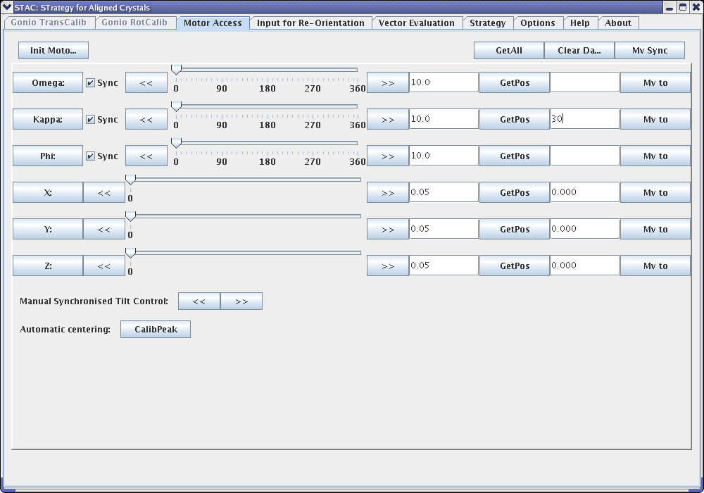

STAC IN A NUTSHELL
STAC can be used to perform crystal reorientation calculations, as
well as multisweep data collection strategy calculations using
different crystal orientations. It fascilitates the use of kappa
goniometers. Although its GUI uses the traditional naming convention of
kappa goniometers (Omega - that carries Kappa - that carries Phi), its
abstract beamline control module (BCM) allows the effective use of any
multi-axis goniometers. Since STAC comes with a built-in GUI, it can be
used by the beamline users directly as a standalone application being
connected by its BCM to the beamline control system.
All the calculations depend on the calibration of the instrument which can be performed using the built-in GUI in Operator Mode.
USER mode:
When STAC comes up, it always
starts in USER Mode, assuming that STAC has been properly installed and configured, and that the instrument is already prepared
and calibrated. In case, it has not been performed, one has to switch
to Operator Mode and do the calibration before starting to use the application.
Using
the GUI, one can always go to the help page for a more detailed
description of the functionalities, and the explanation for the use of
the GUI elements.
When STAC comes up, it automatically opens the tab "Input for
Re-Orientation", because this is the panel where all the inital
information about the crystal in study should be filled.
Button "NEW XTAL":
When
starting to work with a new xrystal, to avoid any confusion, the button
"NEW XTAL" must be pushed to delete all fields related to previous
experiment.
Normally, before reorienting a crystal, the actual
orientation must be determined. To do so, one can collect diffraction
images, and then index those images.
Field Descriptor:
If
the Data Collection application, prepares an interface file for STAC
with all the required information, it can be Loaded. The content of
this file must follow a specification and should like like to following
example:
#STAC OM descriptor (by Sandor Brockhauser)
#==========================================
OMFILENAME /home/STAC/test/dataset1/mosflm/bestfile.par
OMTYPE mosflm
STAC_Omega 0.0000
STAC_Kappa 0.0000
STAC_Phi 0.0000
STAC_X 0.0000
STAC_Y 0.0000
STAC_Z 0.0000
When loading the data collection descriptor file, STAC automatically fetches the information about
- the file with the OrientationMatrix and its type. STAC supports OK files from
- MOSFLM: bestfile.par (that is written if the keyword BEST ON is issued during the mosflm session)
- XDS: CORRECT.LP
- DENZO: .x file
- goniometer
rotation and centring settings (Omega-Kappa-Phi-X-Y-Z) used during the
data collection. Note that motor names and positions must be written
according to the specification of the BCM plugin configured for
STAC.
If this file is not available, the information
field can also be manually field. Using the button "GetPos", the STAC
queries the actual motor positions from the goniometer using the
configured BCM plugin. Not to loose this global information, the data
can be saved into the referenced data collection descriptor file by
pushing the button "Rewrite".
When this information is filled, STAC is ready for the reorientation calculation.
The next point is to specify the desired new orientations. A
few "standard alignments" are offered by default, but one can manually
add any new orientations, or delete any selected orientation lines. The
table follows the old GONSET naming conventions:
- v1: the crystal vector to be aligned with the spindle
- v2: the crystal vector to lay in the plane of the beam and the spindle
Note that for both columns, the valid entries include: - a,b,c,a*,b*,c* - special vectors
- (h,k,l) - reciprocal space vectors
- [a,b,c] - real space vectors
- close: if checked, STAC is approaching the requested v1 alignment even if it would not be geometrically possible to exactly align
The following buttons help to add additional specific orientations to the table:
- "Smallest
Oscillation": the orientations those offer data collections for certain
completeness (100%, 99%, and 98%) with the minimum oscillation
- "Get
a New from File": the orientation of a crystal previously measured.
When referencing the old OM file, its type is automatically determined
from its extension.
From
the prepared table, optionally, the interesting lines can be selected.
Or leaving the whole table unseleted, all the entries will be processed
when pushing the button "Next" on bottom.
In case some requested orientations are not available, an information window is popping up:
The available orientations are then displayed in the automatically broght up tab "Vector Evaluation".
During the run of the application, one can go back to any previous
panel any perform new calculations those are then added to the list of
possibilities. By pushing the button "ClearTable", the old entries can
also be deleted.
By selecting a single datum line, the gonio can automatically
driven there by pushing the button "Mv Sel". Or any aribtrary gonio
settings can also be tested by filling the fields below and pushing the
button "Mv Edit".
Note that STAC tries to keep the precentered
point in the center when changing the orientation. Hence, STAC uses the
centring values registered as XYZ in the tab "Input for
Re-Orientation", and the necessary new translation settings are
displayed in the colums "Trans".
WARNING
Be careful, with these buttons and avoid any settings that would cause collision!
From
the prepared table, optionally, the interesting lines can be
selected. Or leaving the whole table unseleted, all the entries will be
processed when pushing the button "Next" on bottom. The calculated
strategy sweeps specific to the certain orinetations are then
automatically displayed in the panel Strategy. For the same strategy
ID, there can be multiple sweeps registered. It is because in some
cases, the alignment caused blind region does not allow a complete data
collectino. In those cases, a second sweep is calculated to collected
the missed reflections at the original crystal orientation. Pushing the
button "Finish" simply generates a text file in the current working
directory with the details of the data collection strategy sweeps
selected.
In certain situations (especially when the crystal cannot be
indexed), it can be usefull to be able to manipulate the gonio settings
manually. The panel "Motor Access" give full control possibilities for
this:

DNA integration:
OPERATOR mode:
To calibrate the goniometer, the Operator mode must be first enabled on the panel Options:
Both, the Translation Calibration and the Rotation Calibration
offer Wizzards "Auto TransCalib", and "AutoRotCalib" respectively.
Using them, clear instructions lead through the process of the
calibration.
TransCalib:
+ put a calib pin with a nail
+ [Move_to_(0;0;0)]: move to the datum (0;0;0)
+ center the calib pin
+ [reset XYZ Translations to 0]
+ [Move Phi]: select a phi datum
+ center the calib pin (using only X, Y, Z motors: sampx,sampy,phiy)
+ [get XYZ Translation] for phi rotation
+ [Move Kappa]: select a kappa datum
+ center the calib pin (using only X, Y, Z motors: sampx,sampy,phiy)
+ [get XYZ Translation] for kappa rotation
+ [Calculate]: performes the calibration calciulation. The results are show on the bottom
in manually editable texfields. A comparism to the previous calibration is also presented.
+ [Update]: Update the gonio calibration settings.
RotCalib:
+ put a calib pin with a crystal
+ [goniohead_init]: phi_init;mv phi 9;set phi 9;kappa_init;kappa_init (gonioinitstring in BCM.dat)
+ [Move_to_(0;0;0)]: move to the datum (0;0;0)
+ center the crystal + get images (at oscillation start = 0) + index them
+ set the matrice descriptior file on the GUI (0;0;0)
+ [Move_to_(0;0;P)]: select a phi movement in the TextField, and apply the button
+ get images (at oscillation start = 0) + index them
+ set the matrice descriptior file on the GUI (0;0;P)
+ [Move_to_(0;K;P)]: select a kappa movement in the TextField, and apply the button
+ get images (at oscillation start = 0) + index them
+ set the matrice descriptior file on the GUI (0;K;P)
+ [Move_to_(O;K;P)]: select an omega movement in the TextField, and apply the button
+ get images (at oscillation start = Omega/!/) + index them
+ set the matrice descriptior file on the GUI (O;K;P)
+ [Calculate]: performes the calibration calciulation. The results are show on the bottom
in manually editable texfields. A comparism to the previous calibration is also presented.
+ [Update]: Update the gonio calibration settings.
The result of the calibration is then registered in the head section of the STAC configuration file.
Configuration:
The configuration can
be done by mnually editing the file $BCMDEF, normally
"STACinstallDir/config/BCM.dat", or in some installation:
"~/config/BCM.dat":
# GONIO Calibration Settings
OmegaRot -0.00327 8.0E-5 0.99999
KappaRot 0.30262 0.26858 0.91449
PhiRot -0.01748 0.01845 0.99968
KappaTrans -0.06564 0.65576 -0.2298
PhiTrans 0.1051 0.26123 2.4E-4
KappaTransD -0.28427 0.29161 0.91332
PhiTransD 8.7E-4 -0.00125 1.0
# BCM plugin selection
BCM_Plugin BCMplugin_esrf_safe
# spec version:
SPECVERSION artemis2:sandor
# motorDescriptor:
# eg:
# motorName motorName multiplication factor offset dialOffset
# (in STAC) (in spec) (specValue=StacValue*f+offset) (user=dial+dialOffset)
#
X sampx -1 0 0
Y sampy 1 0 0
Z phiy 1 0 0
Omega phi 1 0 0
Kappa kap1 1 0 0
Phi kap2 1 0 0
#
# remark:
# mulfac assumes that calibration has been done, and the
# motors are aligned to the lab axes, otherwise
# [XYZ] <-> [spec translation] would require a 3d transformation
#
INITSTRING minikappa_init